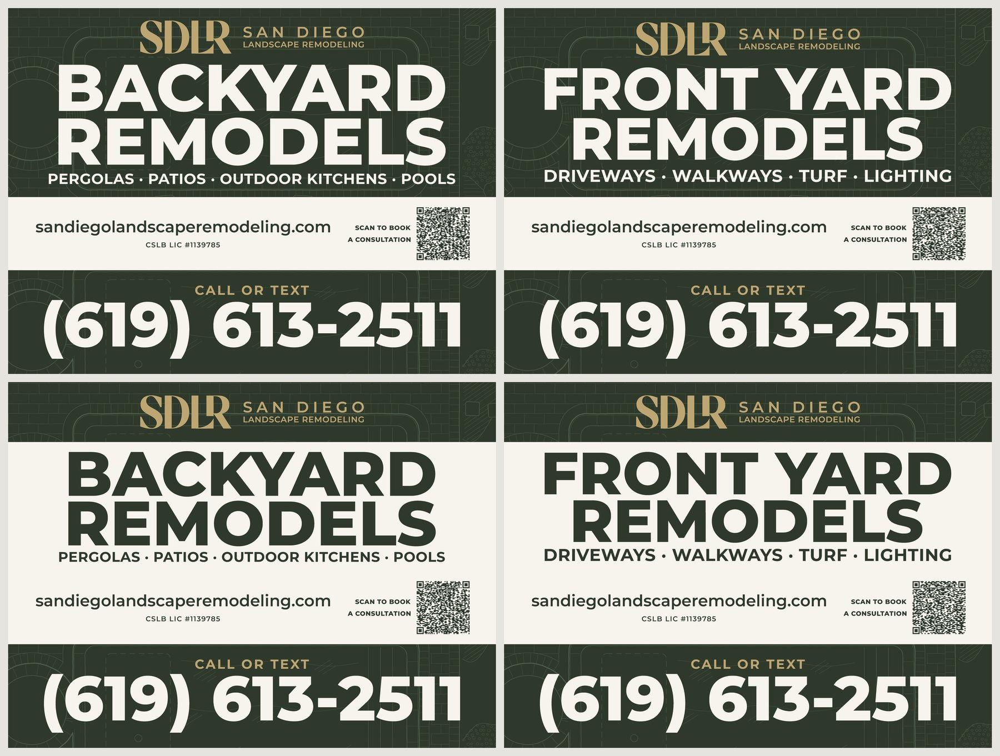
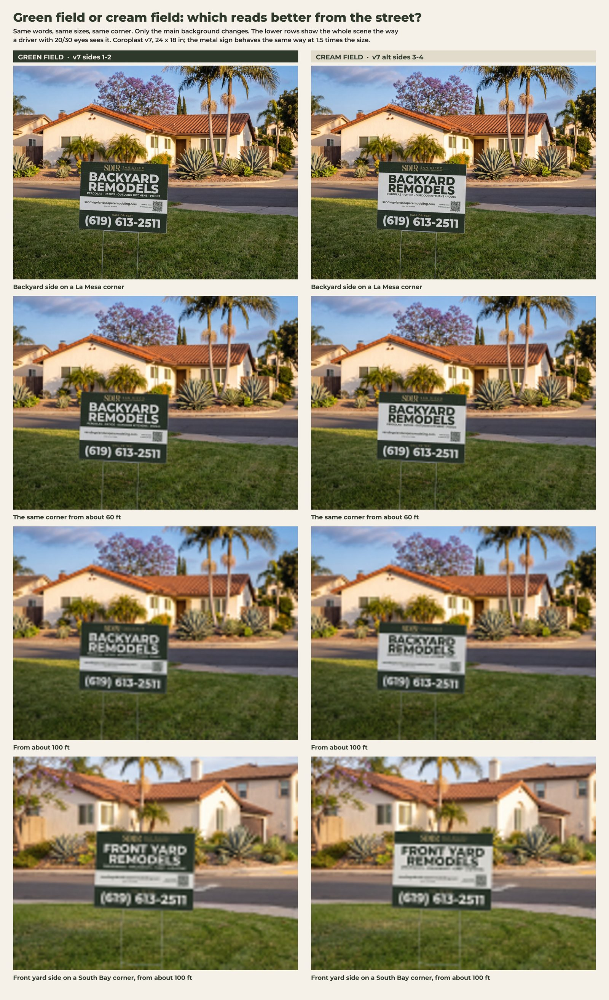

San Diego Landscape Remodeling · Coroplast yard sign · Version 7
Backyard and front yard, like the metal sign
The coroplast sign now matches the aluminum one: BACKYARD REMODELS on one side, FRONT YARD REMODELS on the other, the website bigger, a QR that books a consultation, and the phone on a Forest strip across the bottom like the metal sign's rider. “See your yard before we build it” and “What would yours cost?” are gone.
Your callGreen or cream for the main field? Both pairs are built and print-ready. Not ordered.

Top: the green pair (the layout Gio liked on the metal sign). Bottom: the cream pair (Forest logo strip and phone strip, cream in between).
Green or cream from the street?
The lettering reads the same either way. Cream on Forest and Forest on cream are the same contrast (10.9 to 1). In the 100 ft test below, the headline and the number hold up in both.
What changes is how fast the sign gets noticed, and that depends on what's behind it. In front of planting, hedges or shade, a green panel melts into the leaves and cream is what jumps out. Gio's own photo shows it: the green top half of the current sign disappears into the pepper tree; the cream band with the number is the clearest thing in the frame. In front of a sunny lawn, stucco or sky, the dark green sign stands out more.
My pick: cream. Most of these signs will stand in landscaped yards, usually with planting behind them. The cream pair keeps the Forest logo strip with the gold logo and the Forest phone strip, so it still looks like SDLR, not a realtor sign. Green is the richer look up close.

Same words, sizes and corners; only the background changes. The lower rows blur the whole scene to what a driver with 20/30 eyes sees. These test corners have open lawns behind the sign, which favour green; in front of planting (like Gio's photo) it flips.
What's on every face
Headline: BACKYARD REMODELS (2.3 in capitals) or FRONT YARD REMODELS (2.05 in).
Website at 0.55 in capitals (it was 0.5) and the CSLB licence.
QR (2.6 in) to the Contact page, “Book a San Diego Backyard Consultation”, by phone or on the property, captioned SCAN TO BOOK A CONSULTATION. Each side has its own tag so we see which one gets scanned.
Phone (619) 613-2511 at 2.16 in capitals under a gold CALL OR TEXT. On a 24 in board the number runs out of width before height, so the label sits above it; beside it, the number would shrink to about 1.9 in.
Print spec
Same as Version 6: 24 × 18 in, 4 mm coroplast, double-sided with different art front and back (page 1 = backyard, page 2 = front yard), flutes vertical for a wire H-stake, blockout board, CMYK with Forest #2E382B. Prices and the placement note are on Version 6.
The layered Illustrator master (four artboards: green pair, cream pair), 300 dpi JPGs and the README are in Drive under
02 Clients/san-diego-landscape-remodeling/assets/print-ready/yard-signs/2026-11-21-24x18-coroplast/print-files-v7/. Versions 1–6 are kept.